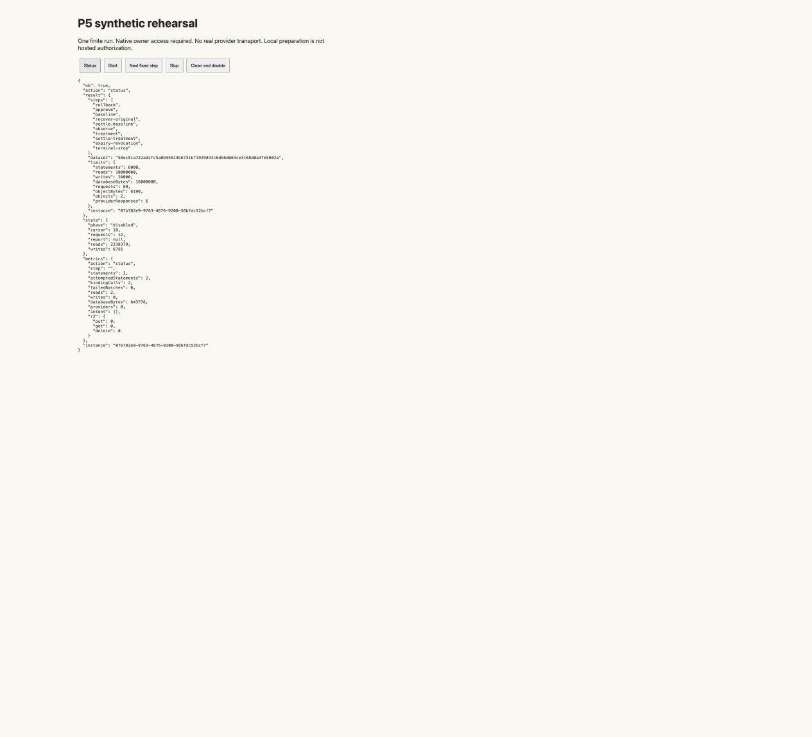

Private finite rehearsal complete · P5 remains open
Ten cases passed.
Cleanup verified.
Native private version4 admitted the exact sealed R13 Worker. Original cleanup removed both synthetic objects and private bodies. A separate Status confirms disabled · cursor10 · report null. The original N10H and schema proofs match Start.
Retained privately:62synthetic application rows, two disabled tombstones, schema/platform metadata, an empty MEDIA resource and source/version history. OptionB unknown-price exposure and indefinite retention remain accepted; this is not deletion or cost-free storage.
Ledger:60charged of71,11unused;26normal and3recovery this continuation. No repeated Start or step, no real provider call. Hidden HTTP and hosting prices remain unmeasured.
Next gate:separate non-purchase actual-Forma identity/schema/holds/custody and authentic financial qualification. Private success supplies no paid-comparison authority or generation-quality claim. October1 expiry and P2 gates remain unchanged.
Read receipts, retained residue and limits · Focused evidence verification · Reusable deployment findings
Verified disabled-state screenshot
